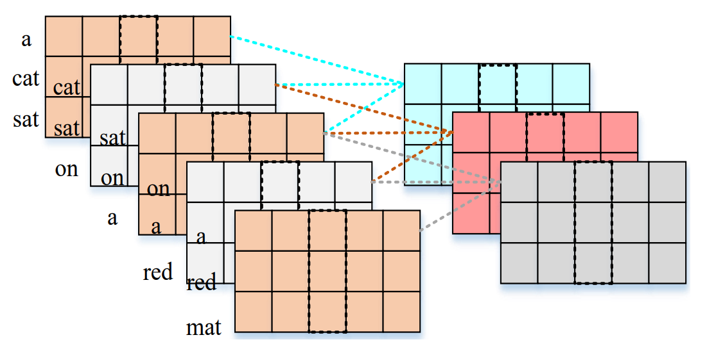
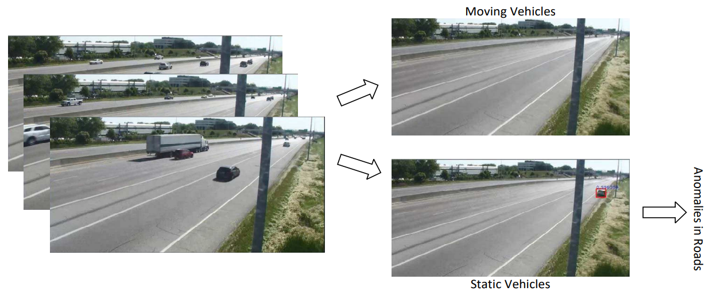
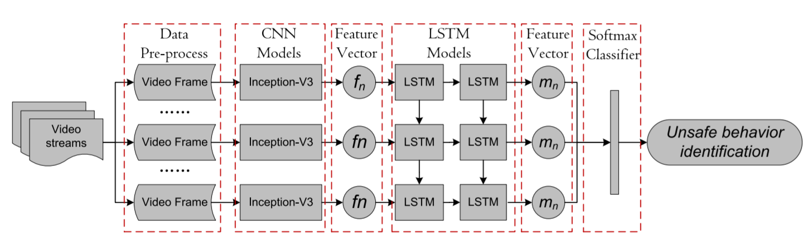
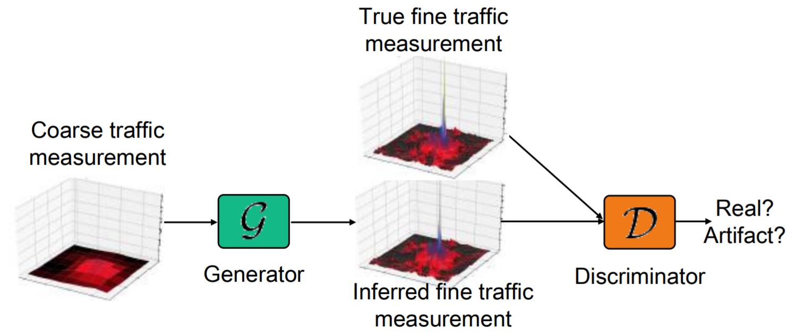

Yunhao Ge

Last year M.Phil @ Shanghai Jiao Tong University.
800 Dongchuan Road, Minhanng District, Shanghai, China
200240
Check out my CV. Find me on Github, Google Scholar, Linkedin, Zhihu, Instagram.
Yunhao Ge |
|
Last year M.Phil @ Shanghai Jiao Tong University.
800 Dongchuan Road, Minhanng District, Shanghai, China |
|
| Email: gyhandy@sjtu.edu.cn Check out my CV. Find me on Github, Google Scholar, Linkedin, Zhihu, Instagram. |
I am pursuing my Ph.D degree in Shanghai Jiao Tong University (SJTU), Shanghai, China. Before that, I received my Bachelor and Master degree both from the School of Electronic Information and Communications, Huazhong University of Science and Technology (HUST), Wuhan, China.
My current research interests lie in medical image analysis, and broadly in the area of computer vision and deep learning.
|  | Spatial Pyramid Pooling Mechanism in 3D Convolutional Network for Sentence-Level Classification Xi Ouyang, Kang Gu, Pan Zhou, IEEE/ACM Transactions on Audio, Speech, and Language Processing, 2018 (TASLP). [Paper] |
|
|  | Dual-Mode Vehicle Motion Pattern Learning for High Performance
Road Traffic Anomaly Detection Yan Xu#, Xi Ouyang#, Yu Cheng#, Shining Yu#, Lin Xiong, Choon-Ching Ng, Sugiri Pranata, Shengmei Shen, Junliang Xing (# means equal contributions), IEEE Conference on Computer Vision and Pattern Recognition Workshop on the AI City Challenge, 2018 (CVPR Workshop 2018). [Paper] |
|
|  | A Deep Hybrid Learning Model to Detect Unsafe Behavior: Integrating Convolution Neural Networks and Long Short-Term Memory Lieyun Ding, Weili Fang, Hanbin Luo, Peter ED Love, Botao Zhong, Xi Ouyang, Automation in Construction, 2018 (JCR Rank Q1). [Paper] |
|

|
Audio-visual Emotion Recognition Using Deep Transfer Learning and Multiple Temporal Models Xi Ouyang, Shigenori Kawaai, Ester Gue Hua Goh, Shengmei Shen, Wan Ding, Huaiping Ming, Dong-Yan Huang, Proceedings of the 19th ACM International Conference on Multimodal Interaction (ICMI 2017) . [Paper] |
|
|  | ZipNet-GAN: Inferring Fine-grained Mobile Traffic Patterns via a Generative Adversarial Neural Network Chaoyun Zhang, Xi Ouyang, Paul Patras, Proceedings of the 13th International Conference on emerging Networking EXperiments and Technologies (CoNext 2017) . [Paper] |
|
Projects | | |
| Text Detection and Recognition MXNet implemention for text detection and recognition [Code for Detection] [Code for Recognition] |
||
|
CVPR Workshop on the NVIDIA AI City Challenge, Champion in Track 2: Anomaly Detection, 2018 The Multimodal Emotion Recognition Challenge (MEC 2017), 1st Runner-Up in Audiovisual Emotion Recognition Sub-challenge, 2017 The Fifth Emotion Recognition in the Wild 2017 Grand Challenge (Emotiw 2017), Sixth Place in Audio-Video Sub-challenge, 2017 Merit Postgraduate Student Award, Huazhong University of Science and Technology, Twice in both 2017 & 2016 Distinguished Graduate Award, Huazhong University of Science and Technology, 2015 |
Last update: Jul. 30, 2018